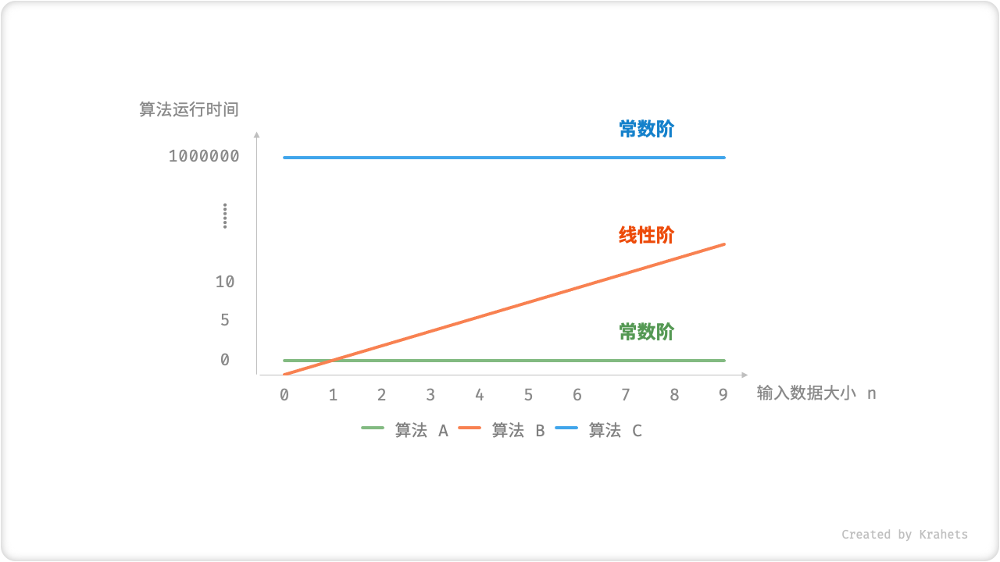
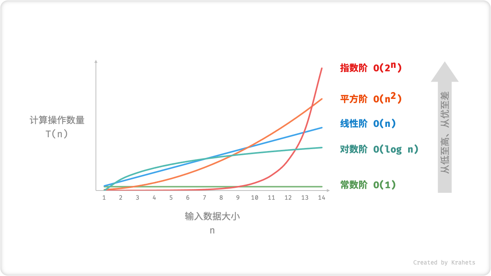
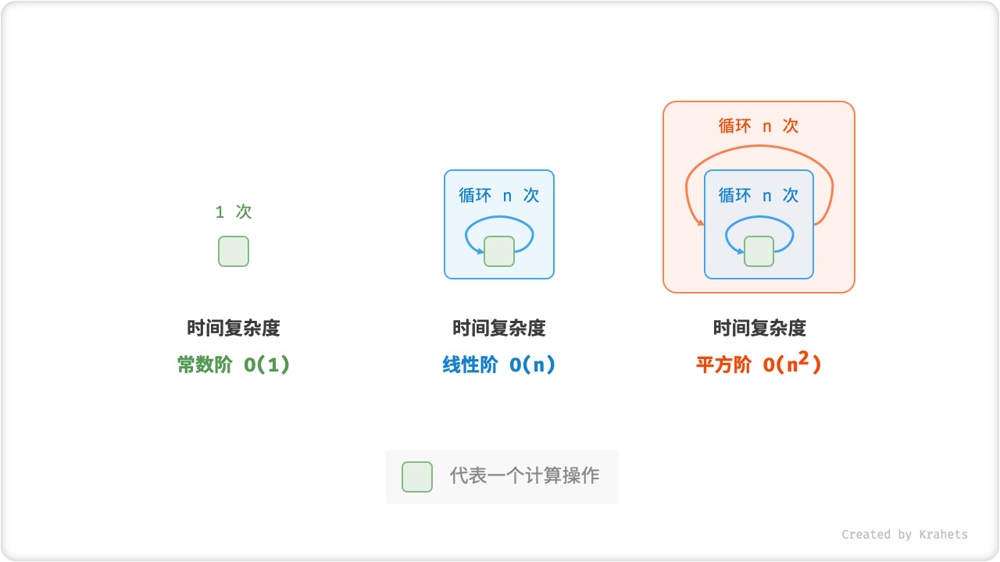
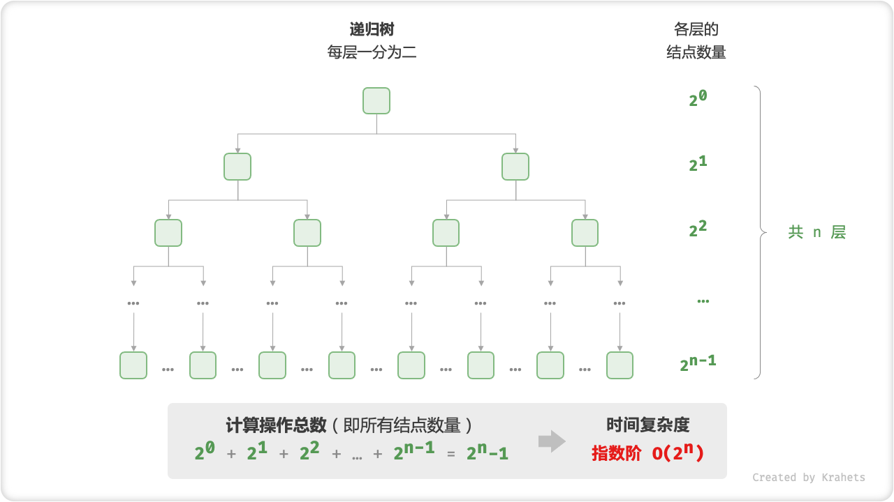
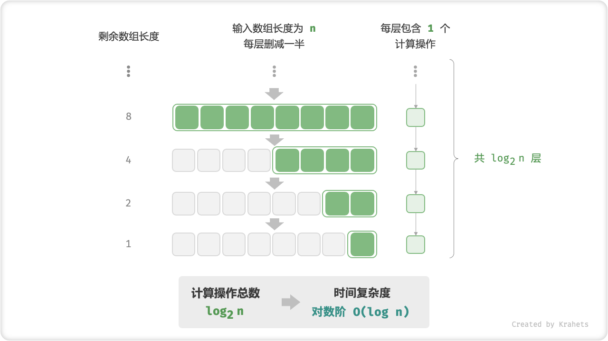
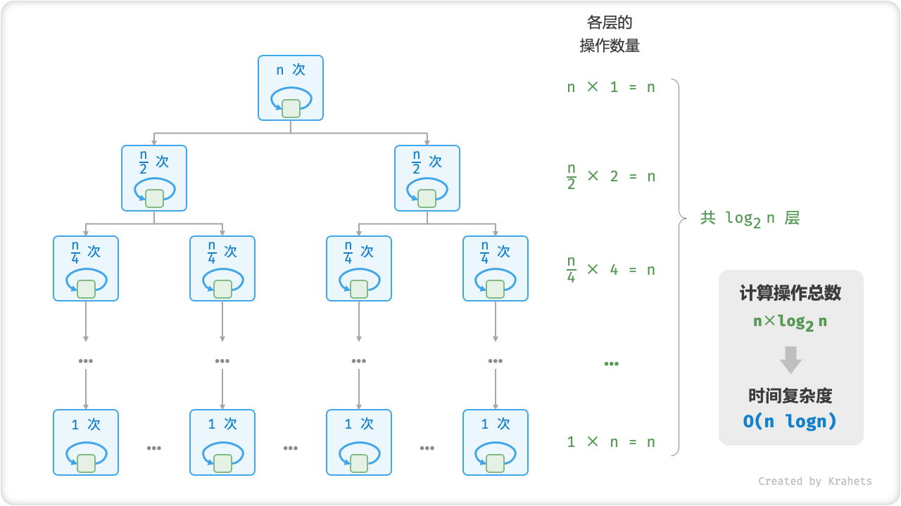
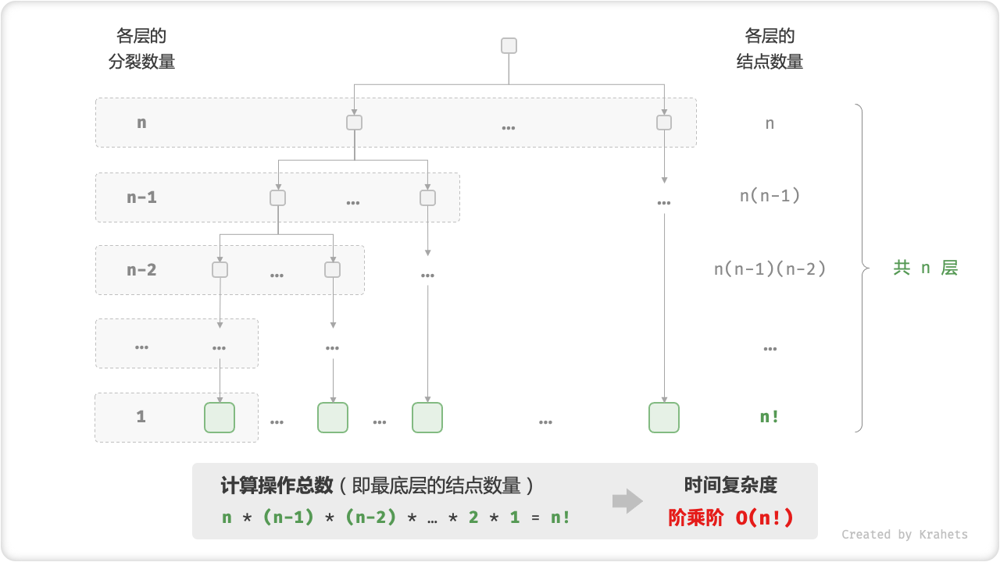

时间复杂度¶
统计算法运行时间¶
运行时间能够直观且准确地体现出算法的效率水平。如果我们想要 准确预估一段代码的运行时间 ，该如何做呢？
- 首先需要 确定运行平台 ，包括硬件配置、编程语言、系统环境等，这些都会影响到代码的运行效率。
- 评估 各种计算操作的所需运行时间 ，例如加法操作
+需要 1 ns ，乘法操作*需要 10 ns ，打印操作需要 5 ns 等。 - 根据代码 统计所有计算操作的数量 ，并将所有操作的执行时间求和，即可得到运行时间。
例如以下代码，输入数据大小为 \(n\) ，根据以上方法，可以得到算法运行时间为 \(6n + 12\) ns 。
但实际上， 统计算法的运行时间既不合理也不现实。 首先，我们不希望预估时间和运行平台绑定，毕竟算法需要跑在各式各样的平台之上。其次，我们很难获知每一种操作的运行时间，这为预估过程带来了极大的难度。
统计时间增长趋势¶
「时间复杂度分析」采取了不同的做法，其统计的不是算法运行时间，而是 算法运行时间随着数据量变大时的增长趋势 。
“时间增长趋势” 这个概念比较抽象，我们借助一个例子来理解。设输入数据大小为 \(n\) ，给定三个算法 A , B , C 。
- 算法
A只有 \(1\) 个打印操作，算法运行时间不随着 \(n\) 增大而增长。我们称此算法的时间复杂度为「常数阶」。 - 算法
B中的打印操作需要循环 \(n\) 次，算法运行时间随着 \(n\) 增大成线性增长。此算法的时间复杂度被称为「线性阶」。 - 算法
C中的打印操作需要循环 \(1000000\) 次，但运行时间仍与输入数据大小 \(n\) 无关。因此C的时间复杂度和A相同，仍为「常数阶」。

Fig. 算法 A, B, C 的时间增长趋势
相比直接统计算法运行时间，时间复杂度分析的做法有什么好处呢？以及有什么不足？
时间复杂度可以有效评估算法效率。 算法 B 运行时间的增长是线性的，在 \(n > 1\) 时慢于算法 A ，在 \(n > 1000000\) 时慢于算法 C 。实质上，只要输入数据大小 \(n\) 足够大，复杂度为「常数阶」的算法一定优于「线性阶」的算法，这也正是时间增长趋势的含义。
时间复杂度分析将统计「计算操作的运行时间」简化为统计「计算操作的数量」。 这是因为，无论是运行平台、还是计算操作类型，都与算法运行时间的增长趋势无关。因此，我们可以简单地将所有计算操作的执行时间统一看作是相同的 “单位时间” 。
时间复杂度也存在一定的局限性。 比如，虽然算法 A 和 C 的时间复杂度相同，但是实际的运行时间有非常大的差别。再比如，虽然算法 B 比 C 的时间复杂度要更高，但在输入数据大小 \(n\) 比较小时，算法 B 是要明显优于算法 C 的。即使存在这些问题，计算复杂度仍然是评判算法效率的最有效、最常用方法。
函数渐进上界¶
设算法「计算操作数量」为 \(T(n)\) ，其是一个关于输入数据大小 \(n\) 的函数。例如，以下算法的操作数量为 \(T(n) = 3 + 2n\) ，这是个一次函数，因此时间复杂度是线性阶。
我们将线性阶记为 \(O(n)\) ，这个数学符号被称为「大 \(O\) 记号 Big-\(O\) Notation」。时间复杂度的全称是「渐进时间复杂度」，体现着其是一个渐进概念。我们用大 \(O\) 记号来表示函数 \(T(n)\) 的「渐进上界 asymptotic upper bound」。
函数渐进上界
若存在正实数 \(c\) 和实数 \(n_0\) ，使得对于所有的 \(n > n_0\) ，均有 $$ T(n) \leq c \cdot f(n) $$ 则可认为 \(f(n)\) 给出了 \(T(n)\) 的一个渐进上界，记为 $$ T(n) = O(f(n)) $$ 其含义是 当 \(n\) 趋于正无穷时，\(T(n)\) 和 \(f(n)\) 处于相同的增长级别 。
（图）
Fig. 函数的渐进上界
「渐进上界」数学味儿很重，如果你感觉没有完全理解，请不要担心，在实际使用中我们只需要会推算即可，数学意义可以慢慢领悟。
推算方法¶
推算时间复杂度分为两步，首先「统计操作数量」，然后「判断渐进上界」。
1. 统计操作数量¶
对着代码，从上到下一行一行地计数即可。分享几条提高效率的技巧：
- 跳过数量与 \(n\) 无关的操作。 因为他们都是 \(T(n)\) 中的常数项，对时间复杂度不产生影响。
- 省略所有系数。 例如，循环 \(2n\) 次、\(5n + 1\) 次、……，都可以化简记为 \(n\) 次，因为 \(n\) 前面的系数对时间复杂度也不产生影响。
- 循环嵌套时使用乘法。 总操作数量等于外层循环和内层循环操作数量之积。
根据以下示例，完整统计时 \(T(n) = 2n^2 + (5n + 1) + 2\) ，使用技巧后 \(T(n) = n^2 + n\) ，最终都能得出时间复杂度为 \(O(n^2)\) 。
2. 判断渐进上界¶
时间复杂度由多项式 \(T(n)\) 中最高阶的项来决定。这是因为在 \(n\) 趋于无穷大时，最高阶的项将处于主导作用，其它项的影响都可以被忽略。
以下表格给出了一些例子，其中有一些夸张的值，是想要向大家强调 系数无法撼动阶数 这一结论。在 \(n\) 趋于无穷大时，这些常数都是 “浮云” 。
| 操作数量 \(T(n)\) | 时间复杂度 \(O(f(n))\) |
|---|---|
| \(100000\) | \(O(1)\) |
| \(3n + 2\) | \(O(n)\) |
| \(2n^2 + 3n + 2\) | \(O(n^2)\) |
| \(n^3 + 10000n^2\) | \(O(n^3)\) |
| \(2^n + 10000n^{10000}\) | \(O(2^n)\) |
常见类型¶
设输入数据大小为 \(n\) ，常见的时间复杂度类型有（从低到高排列）

Fig. 时间复杂度的常见类型
Tip
部分示例代码需要一些前置知识，包括数组、递归算法等。如果遇到看不懂的地方无需担心，可以在学习完后面章节后再来复习，现阶段先聚焦在理解时间复杂度含义和推算方法上。
常数阶 \(O(1)\)¶
常数阶的操作数量与输入数据大小 \(n\) 无关，即不随着 \(n\) 的变化而变化。
对于以下算法，无论操作数量 size 有多大，只要与数据大小 \(n\) 无关，时间复杂度就仍为 \(O(1)\) 。
线性阶 \(O(n)\)¶
线性阶的操作数量相对输入数据大小成线性级别增长。线性阶常出现于单层循环。
「遍历数组」和「遍历链表」等操作，时间复杂度都为 \(O(n)\) ，其中 \(n\) 为数组或链表的长度。
Tip
数据大小 \(n\) 是根据输入数据的类型来确定的。 比如，在上述示例中，我们直接将 \(n\) 看作输入数据大小；以下遍历数组示例中，数据大小 \(n\) 为数组的长度。
平方阶 \(O(n^2)\)¶
平方阶的操作数量相对输入数据大小成平方级别增长。平方阶常出现于嵌套循环，外层循环和内层循环都为 \(O(n)\) ，总体为 \(O(n^2)\) 。

Fig. 常数阶、线性阶、平方阶的时间复杂度
以「冒泡排序」为例，外层循环 \(n - 1\) 次，内层循环 \(n-1, n-2, \cdots, 2, 1\) 次，平均为 \(\frac{n}{2}\) 次，因此时间复杂度为 \(O(n^2)\) 。
指数阶 \(O(2^n)\)¶
Note
生物学科中的 “细胞分裂” 即是指数阶增长：初始状态为 \(1\) 个细胞，分裂一轮后为 \(2\) 个，分裂两轮后为 \(4\) 个，……，分裂 \(n\) 轮后有 \(2^n\) 个细胞。
指数阶增长地非常快，在实际应用中一般是不能被接受的。若一个问题使用「暴力枚举」求解的时间复杂度是 \(O(2^n)\) ，那么一般都需要使用「动态规划」或「贪心算法」等算法来求解。

Fig. 指数阶的时间复杂度
在实际算法中，指数阶常出现于递归函数。例如以下代码，不断地一分为二，分裂 \(n\) 次后停止。
对数阶 \(O(\log n )\)¶
对数阶与指数阶正好相反，后者反映 “每轮增加到两倍的情况” ，而前者反映 “每轮缩减到一半的情况” 。对数阶仅次于常数阶，时间增长的很慢，是理想的时间复杂度。
对数阶常出现于「二分查找」和「分治算法」中，体现 “一分为多” 、“化繁为简” 的算法思想。
设输入数据大小为 \(n\) ，由于每轮缩减到一半，因此循环次数是 \(\log_2 n\) ，即 \(2^n\) 的反函数。

Fig. 对数阶的时间复杂度
与指数阶类似，对数阶也常出现于递归函数。以下代码形成了一个高度为 \(\log_2 n\) 的递归树。
线性对数阶 \(O(n \log n)\)¶
线性对数阶常出现于嵌套循环中，两层循环的时间复杂度分别为 \(O(\log n)\) 和 \(O(n)\) 。
主流排序算法的时间复杂度都是 \(O(n \log n )\) ，例如快速排序、归并排序、堆排序等。

Fig. 线性对数阶的时间复杂度
阶乘阶 \(O(n!)\)¶
阶乘阶对应数学上的「全排列」。即给定 \(n\) 个互不重复的元素，求其所有可能的排列方案，则方案数量为
阶乘常使用递归实现。例如以下代码，第一层分裂出 \(n\) 个，第二层分裂出 \(n - 1\) 个，…… ，直至到第 \(n\) 层时终止分裂。

Fig. 阶乘阶的时间复杂度
最差、最佳、平均时间复杂度¶
某些算法的时间复杂度不是恒定的，而是与输入数据的分布有关。 举一个例子，输入一个长度为 \(n\) 数组 nums ，其中 nums 由从 \(1\) 至 \(n\) 的数字组成，但元素顺序是随机打乱的；算法的任务是返回元素 \(1\) 的索引。我们可以得出以下结论：
- 当
nums = [?, ?, ..., 1]，即当末尾元素是 \(1\) 时，则需完整遍历数组，此时达到 最差时间复杂度 \(O(n)\) ； - 当
nums = [1, ?, ?, ...]，即当首个数字为 \(1\) 时，无论数组多长都不需要继续遍历，此时达到 最佳时间复杂度 \(\Omega(1)\) ；
「函数渐进上界」使用大 \(O\) 记号表示，代表「最差时间复杂度」。与之对应，「函数渐进下界」用 \(\Omega\) 记号（Omega Notation）来表示，代表「最佳时间复杂度」。
/* 查找数组 nums 中数字 1 ，返回索引 */
int algorithm(int[] nums) {
for (int i = 0; i < nums.length; i++) {
if (nums[i] == 1)
return i;
}
return 0;
}
/* 生成数据 */
int[] randomNumbers(int n) {
int[] nums = new int[n];
// 生成数组 nums = { 1, 2, 3, ..., n }
for (int i = 0; i < n; i++) {
nums[i] = i + 1;
}
// 随机打乱数组元素
Collectons.shuffle(Arrays.asList(nums));
return nums;
}
/* 生成数据并调用算法 */
int n = 1000;
int[] nums = randomNumbers(n);
int index = algorithm(nums);
System.out.println("数字 1 的索引为 " + String.valueOf(index));
Tip
我们在实际应用中很少使用「最佳时间复杂度」，因为往往只有很小概率下才能达到，会带来一定的误导性。反之，「最差时间复杂度」最为实用，因为它给出了一个 “效率安全值” ，让我们可以放心地使用算法。
从上述示例可以看出，最差或最佳时间复杂度只出现在 “特殊分布的数据” 中，这些情况的出现概率往往很小，因此并不能最真实地反映算法运行效率。相对地，「平均时间复杂度」可以体现算法在随机输入数据下的运行效率，用 \(\Theta\) 记号（Theta Notation）来表示。
对于部分算法，我们可以简单地推算出随机数据分布下的平均情况。比如上述示例，由于输入数组是被打乱的，因此元素 \(1\) 出现在任意索引的概率都是相等的，那么算法的平均循环次数则是数组长度的一半 \(\frac{n}{2}\) ，平均时间复杂度为 \(\Theta(\frac{n}{2}) = \Theta(n)\) 。
但在实际应用中，尤其是较为复杂的算法，计算平均时间复杂度比较困难，因为很难简便地分析出在数据分布下的整体数学期望。这种情况下，我们一般使用最差时间复杂度来作为算法效率的评判标准。